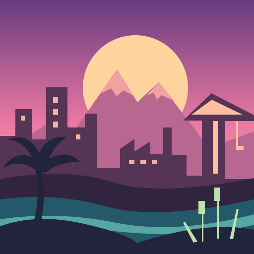

JE EERSTE MIDDAG IN LEONIDA
JOUW REIS TOT NU TOE
EEN PLAN MET RUIMTE VOOR OMWEGEN
40 min introductie · 55 min stad · 85 min roadtrip · 35 min testen · 25 min vrij. De route is flexibel: ga verder zodra een gebied toegankelijk is.
Hier is het nog rustig. Kies een ander filter.
EEN PLEK OM TERUG TE KOMEN
Een mooie plek, een onverwachte omweg of een idee voor de volgende keer.
NEEM LEONIDA MEE
Open de app via een HTTPS-adres in Safari. Tik op Delen → Zet op beginscherm → Voeg toe. Open daarna de app en wacht tot “Offline gereed” verschijnt.
Offline werkt na de eerste volledige online laadbeurt. Rechtstreeks openen vanuit Bestanden of een ZIP installeert geen PWA. Op een beheerde iPhone kan je organisatie installatie of webinhoud blokkeren.
Gebruik Start, Introductie, Verkennen of Voortgang in het menu. Na 100% van de volledige introductie opent Verkennen bij een volgende start automatisch. De kaart is een eigen schematisch gebiedsoverzicht. Persoonlijke opdrachten zijn geen bevestigde gamegids. Er staat een brongebaseerde selectie voor hoofdstuk 1 t/m 3 in de app, met bronlinks en aanvullende missievoorwaarden. Dit is nog geen complete gids. Je kunt al eigen ontdekkingen vastleggen, met een hoofdstuk en categorie.
Gebaseerd op jouw plan voor een eerste middag van vier uur, met structuur én spontane ontdekkingen. De 85 minuten roadtrip zijn verdeeld over de Keys (45) en Grassrivers (40). Opdrachten zijn suggesties, geen garantie dat een gebied of functie beschikbaar is.
Alle illustraties, het LE-logo en app-iconen zijn speciaal voor deze app gemaakt. Er zijn geen officiële GTA-logo’s, screenshots, externe lettertypen of online media opgenomen: hiervoor is geen hergebruiklicentie vastgesteld. GTA, Vice City en Leonida verwijzen naar de gamewereld van Rockstar Games.
Voortgang blijft lokaal. Maak een back-up voordat je browsergegevens wist. Safari en de beginscherm-app kunnen een afzonderlijke opslag gebruiken.
Alle vinkjes, notities, foto’s en eigen ontdekkingen op dit apparaat worden gewist. Download eventueel eerst een back-up.